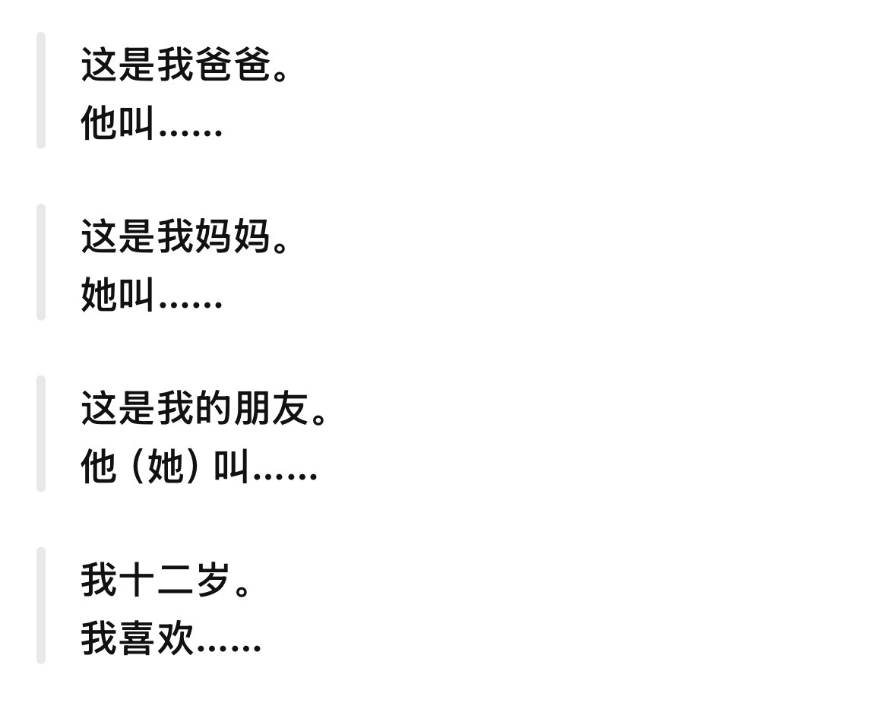

Упражнения на говорение
Практика и контекст
Тренировка тонов и подстановочные диалоги для начинающих — читайте вслух и проговаривайте вместе с преподавателем.
Тренировка тонов (四声)
Читайте слоги по столбцам слева-направо, чётко проговаривая каждый тон.
Диалог для начинающих
Подставьте своё имя, возраст и увлечения вместо «……» и произнесите фразы вслух.
